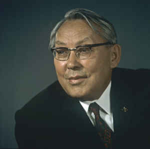

ҰЛПАН ПОВЕСТЬ Есенейдің төрт қос жылқысы «Қаршығалы» шұбарына жақындап келіп, қапталдай төніп қалып еді. Тақырланып қалған жазғы жайлаудан келе жатқан жылқы қарауытқан қалың орманды, өзекті-шілікті өңірге тұяғы тиген соң-ақ ұстарадай өткір тістерін жерге қадай бастады. Қазақ байлығы жылқысында. Қысқа қарай жылқы малын ықтасыны бар, қара отты шұбарға жақын ұстамасаң — «Байлық — бір жұттық, батыр — бір оқтық» — кейде тақыр-таза жаяу да қаласың. Жаяу қалған адам несімен адам?.. Несімен қазақ? Есеней қазір қаптап-қапталдап, жер түгін тістелей жылжып келе жатқан байлығының алдында едәуір жерде биіктеу жотаның қырқасында ат үстінде тұр. Көз жетпес жиекке дейін созылып-керіліп жатқан кең алқап шын-ақ мақтағандай екен. Жота-жота қалың ормандар. Өзекті-шілікті, тың жатқан қара отты кең шиыр. Ат шашасынан аз-ақ асатын алғашқы жауған ақша қар жердің шөбін әлі жасыра алмапты. Сондай жерге ертерек келіп ірге тепкеніне байдың, көңілі әбден тояттап тұр. Есенейдің қасында төрт адам жолдастары бар еді: ең сенімді серігі — жамағайын түрікпен Мүсіреп, Алдай елінен — аңшы Мүсіреп, руы басқа болса да Есенейдің қоныстасы Бекентай батыр және Есенейдің қосалқы атын жетелеп жүретін жас жігіт, түрікпен Мүсірептің туған інісі — Кенжетай. Түрікпен Мүсіреп аздап сыбызғы тартады. «Боз іңген», «Боз мұнай», «Сүйір батыр», «Алқа кел», «Алғашқым» деген күйлері бар. Одан соңғы құмары бір жақсы ат, қонымды киім, серілеу адам. Қалталарында қалампыр жүреді... Әлі ақ кірмеген сақал-мұртын жарасымды қырқып ұстайды. Алдай Мүсіреп аңшы адам. Балдаққа сүйеген оң қолында «түлкі перісі» атанған томағалы қара бүркіт, арқасында жалғыз оқ, аяқты шиті мылтық. Азырақ асыға сөйлейтін, азырақ асыра сөйлейтін адам. Күн кешкіре келе бұлыңғырланып тұр еді, ұзамай қар жапалақтай бастады. Есеней, алыстан көз тігіп келіп тоқтаған жерін мақтап-мақұлдауларын күткендей жолдастарына қарады. Осы кең қорықты Есенейдің есіне салған аңшы Мүсіреп еді. Сонысын тағы бір ескертіп қалғысы келіп, Есенейге қарай еңсеріле бұрылып: — Аға сұлтан пірім-ау! Айтпап па едім? Қысқа қарай жылқы баласына бұдан артық жер болмайды. Иесіз жатқан жер! Бір қыс жайладың — болды, аға сұлтанның шұбары атанады да, балаңның баласына дейін кете барады! — деді. Есеней оның сөзін аяқтатпай екінші Мүсірепке қарады. Осы бір «аға сұлтан», «балаңның баласына» деген сөздер Есенейге шаншудай қадалатынын ақ көңіл аңшы аңдамай-ақ қойды. Аға сұлтан болғысы келіп бола алмай қалған адамға, екі ұлы бір күнде өліп, содан бері жиырма жыл бойында әйелі бала көтермей қойған адамға жаңағы сездер мазақтаумен қорлаумен тең екенін жарамсақ аңшы түсінбесе керек. Атақ құмар, лақап құмардың сөзін қайталай береді. Өткен қыс аңшылықта кездесіп қалып Есенейге екі түлкі, үш қара қылшық күзен байлап еді, сонысын арқаланып кимелеп сөйлейді. Биыл міне, жер қарадан қасына еріп Есенейдің қасқыр алатын арабы иттерін баптап жүр. Өзі де аң құмар Есеней оның бетін біржола қайтарып тастайтын қатты сөз айтпай келеді. Қолын азғана сермеп тоқтатып тастайды, бар болғаны сол-ақ... — Жазы-күзі мал тұяғы тимеген шүйгін екені көрініп-ақ тұр. Бірақ, осы күні иесіз жер бар ма, бір иесі бар шығар,— деп түрікпен Мүсіреп аз кідіріп қалып еді, аңшы Мүсіреп тағы киіп кетті: — Жоқ, жоқ! Иесіз жатқан жер! Бұл өңірде мен білмейтін жер бар ма, тәңірі! Қасқыры мен түлкісінің ен-таңбасына дейін білемін. Құдай біледі деп айтайын, «Қаршығалыда» үш мың қасқыр, бес мың түлкі, он екі мың күзең жеті мың, қоян бар!.. Түрікпен Мүсіреп ағасына қарап қағытып қалды: — Ақ құр, қара құрларын санамаған екенсіз, Мүсеке! — Үш мың, қасқыры болса, менің жылқымды бір қыста жеп тауыспас па екен? — деп Есеней де қалжыңдады. Кенжетай ағасына қарап ну орманның, орта тұсын көзімен нұсқады. Мүсіреп інісінің нұсқаған жағына қарап: — Сонау қалыңның орта тұсында үш жерден түтін керше ме деймін,— деді Есенейге бұрылып.— Әне бір салт аттылар да көрінді. Үш салт атты қатты жүгіртіп келеді. Біреуі алдарақ, екеуі кейінірек. Алдыңғының аты не жорға, не қу аяқ желісті болу керек. Кейінгі екеуі ара-тұра шауып алып ілесіп келеді. Алдыңғы жігіт ағызған бойы жотаның қырқасында тұрған топтың алдына жақындап келіп сөйлеп кетті: — Армысыздар, ағалар!.. «Қаршығалы» шұбарын паналап қонып қалған үш ауыл кірме Күрлеуіттің арызын айта келдік... Биыл қыс осында жан сақтаймыз ба деп жаз бойы қорып келген жеріміз еді. Жетісіп отырған ел емеспіз... Сорлының зары арлыға кездескен деп жіберіп еді... айтар арызымызға құлақ ассаңыздар екен... Аңшы Мүсіреп Есенейге жарамсақтанып жігіттің арызын аяқтатпай киіп кетті: — Сүйреңдемей тоқта, бала, тоқта деген соң! Аулыңа сәлем айт: Есеней аға сұлтанның ат тұмсығын тіреген жеріне таласып әуре болмасын! — деді. Жігіт те іркілген жоқ: — Есенейі жоқ елді де ел екен жұрт екен десеңіздер қара ерттей қаптап келе жатқан жылқының бетін кейін бұрсаңыздар екен. Осы арызымыз... — Мына көргенсіз неме кімнің атын атап тұр өзі! Құйрығыңды түріп тастап дүрелеп алсын деп тұрмысың?—деп анайы аңшы атын тебініп-тебініп қалды. Есеней қолын сермеп тоқтатпағанда әлденеге ұрынып қалатын жайы бар. Жас жігіт бұл жолы жауап қайырған жоқ. Басын темен иіп арызына жауап күтіп тұр. Осындай ежет жастарды Есеней қатты ұнататын еді. Жиырмаға келмеген бала жігіттің сезінің нәрі де, зәрі де бар екен. Осылай есірермін деп үміт еткен екі ұлы қара шешектен бір күнде қайтыс болғалы осындай уытты жасқа қызыға қарап қалушы еді. Өзімен рулас он ауыл Сибанның ішінде үміт етер жастардың бәрін де сыртынан бақылай жүретін. Бала жігітке қызыға тұрып түрікпен Мүсірепке қарады — жылы жауап бер дегендей еді. Түрікпен Мүсіреп жас жігіттің сөз саптауынан ашынғандық лебін өзі де танып тұрған. «Кірме Күрлеуіт» дегеніне қарағанда арыз айта жіберіп отырған қай бір бай ауыл дейсің. Сөз білер ақсақалы да болмаған ғой. — Шырағым, арызың аяқсыз қалмас,— деді ол,— аяқсыз қалдыратын арыз сияқты емес. Ауылдарыңа осыны айта барарсың. Түсі игіден түңілме дегендей, көргенсіз деуге, ішім қимай тұр өзіңді. Әттең, ашынғандықтан болса да азды-көпті асқақтай сөйлегенің, де болды. Аулыңа мұны да айта барарсың. Бала жігіт бұл жолы да тез жауап қайырды: — Арызымызды айтып кел деген жұрт асқақтай сөйле деп тапсырған жоқ еді, ағалар. Солай болып шықса, айып өзімде. Жүйелі сөз жүйесін табар, жүйесіз сөз иесін табар деген бар ғой. Міне, айыбым! — деп атынан түсе қалып ұзын шылбырын Кенжетайға қарай серпіп жіберді:—әйтеуір ат жетелеп жүр екенсің, мынаны да жетелей жүр... Содан соң екі жолдасының бірін түсіріп соның атына мініп алды да жөнеле берді. — Кешіре көріңіздер, ағалар... Жолдастары бір атқа мінгесіп кетті. Есеней ұзай берген бала жігітке әлі қарап тұр. Бір сәтке баласыздығы бойын билеп, бар ойы сол бала жігіттің соңынан кетіп бара жатқандай еді. — Қап, құйрығын түріп жіберіп дүрелеп алу керек еді өзін! —деді аңшы Мүсіреп, қайта қызына бастап. «Құйрығын түріп» дегенді тауып айттым деп қайталап тұр. — Апыр-ау, бұл кімнің қызы болды екен? —деп түрікпен Мүсіреп Есенейге қарады. — Қыз? — Күні бойы Есенейдің аузынан шыққан екінші сөз осы еді. — Ие, қыз!.. «Міне, айыбым!» дегенде кез құйрығымен өзіңді бір шарпып өткенде нағып байқамадың? Шарпып емес-ау, кез қиығын серпе тастап қарайтыны бар екен де!.. — Ай, Түркпен-ай, жер ортаға жақындап қалсаң да қыз-келіншек дегенде қырағысың-ау! — деді Есеней. Неге екені белгісіз, мақтағандай еді. Аңшы Мүсіреп шошып кетті. — Қыз болса мені құдай ұрды төбемнен! — деді.— Мен масқара болдым. Бұл Артықбай батырдың қызы Ұлпан. Үйіне қонып кеткеніме ай толған жоқ. Ең болмаса қара жорғасын танымай қалғанымды қарашы! Бір күн қасыма еріп жүріп, екі қаз байланып еді! Қарағым-ай, енді сенің бетіңе қалай қарармын! —Аңғал аңшы күйіп-пісіп шошалақтады да қалды. — Дүре соққың келмеп пе еді? Бетіне қарамай-ақ соға бересің де! — деп, өзі сасқалақтап қалған аңшыны түрікпен Мүсіреп біржола өлтіре салды. — Артықбай батырдың қызы деймісің? — деді Есеней. — Ойбай, аға сұлтан пірім-ау! Соның, қызы Ұлпан. Сол жақ артқы аяғы ақ бақай, маңдайында төбелі бар, су төгілмейтін қара жорға тұр ғой міне!.. Қыздың бір-ақ рет көз қиығын Есенейге серпе тастап қарағанын түрікпен Мүсірептен басқа ешкім аңдамай қалған екен. Кешкірген бұлыңғыр күн, қапалақтаған қар... арыз айтуға қыз келер деп кім ойлаған! Келген бетінде кие сөйлеп бәрінің көңілін сөзіне аударып әкеткен Ұлпан қыз екендігін аңдатпауға тырысып еді. Солай бола тұрса да, қыздың аты қыз ғой, атақты батыр, атақты әділ би атанған Есенейге қыз көзімен бір қарап қалғанын өзі де сезбеген. Қыр жайлаулардан құлап келе жатқан Есенейдің жылқысы екенін аулы біліп отырған. Қалың, қара шұға жалбағай бет-аузын жауып кеткенімен атандай қара көр аттың үстіндегі зор денелі адамның Есеней екенін Ұлпан да ішінен таныған. Бес жасар кезінде көргені де, қорқатыны да есіне түскен. Бірақ, өзін танытпай кетті. Есеней тобы аңырып қалды. Не істеу керек? Қара жорғаны қыздың айыбы деп қалай алып қалар? Сұңғыла қыз бұларға бір ұяларлық ұпай салып кетті емес пе! Ие, «малым — жаным садағасы, жаным — арым садағасы» дейтін елдің нақылын еске алсаң, лайықты жұмыс болмапты. Есеней жолдастарына қарады:— «Не істеу керек?» — Артықбай батырға тізе көрсеткендей болып келгеніміздің өзі қандай айып! Қызының атын айыпқа алып қалғанымыз екінші айып. Арыз айта келген қыздың атын айыпқа алып қалғанымыз айып біткеннің ішінде ел естімегені болар! — деп түрікпен Мүсіреп Есенейдің қара шешектен қара шұбар болып қалған бетіне тура қарады. Есеней өмірінде айып тартып көрмеген айып-жазасы болған адамдарға қатал жаза беруді жақтайтын би еді. Болмашыдан айыпты болғанына әрі күлкісі келеді, әрі шешімін таба алмай тұрғаны анық. Артықбай оны бір рет намыс өлімінен айырып алған, екінші рет өлімнің өзінен айырып алған кәрі жолдасы, батыр адам. — Қара жорғаның мойнына ат қосақтап қайтарған дұрыс болар! — деді түрікпен Мүсіреп. — Айналайын адасым-ай, таптың, таптың! Менің кәрі бозымды бірге қосақтап жібер! — деді ақ көңіл аңшы. Есеней «жөнел!», деген бұйрығын Кенжетайға иегімен нұсқады. — Артекеңе сәлем айт, ертең сәлем беріп қайтармын! Өзі жетелеп жүрген Есенейдің, «Мұзбел» дейтін торы төбелін қара жорғамен бірге жетелеп, Кенжетай жөнеліп кетті. Есеней жолдастарына ендігі байламын айтты: — Осы жоннан әрі бір жылқы тұяқ салмасын! Сәдірдің қосынан басқа қостардың екеуін Құсмұрынға қарай, төртінші қосты өзіміздің Ақ-құсақ, Қара емен Еламан көліне қарай аударыңдар. Сәдірдің қосы осы маңда қала тұрсын. Екі адас, менімен қаларсыңдар. Бекентай, сен Құсмұрын қосымен кетерсің... Жолдастары Есенейдің бұйрығын орындауға тарасып кетті. Есеней өз қосын тіктіруге тапсырған көлге қарай жалғыз бұрылды. «Бұдан он жыл бұрын жер астындағының дыбысы елден бұрын маған жетуші еді, Артықбай батырға ұрынып қалғаным қартая бастағаным-ау! — деп ойлады Есеней.— Әлде қадірім түсе бастағаны ма екен? Аңшының көпіртпесіне еріп кете бергенім қалай? Бұрын ғой, ондайды өзім анықтатып алушы едім!» Жаңағы аз оқиға Есенейдің көз алдына бұдан он бес жыл бұрын өткен оқиғаларды әкелді. Артықбай батырдың ерекше бір ерліктерін еске түсірді. Ол бейбіт елді қайта-қайта шауып, қайта-қайта талан-таражға салған Кенесары төренің лаңы болатын. Кенесары орыс шекарасынан шеткей отырған Керей-Уақ елдерін екі рет шауып әкетті. — Кенесарыны хан сайлауға риза болса, ақсақал-қарасақал билері тез жетсін! — деп шапқыншы жібереді де, үш күн ішінде хабар болмаса шауып әкетеді. Жылқыға құмар, қыз-келіншекке құмар. Тобыл, Бағлан, Стап, Капитан қалаларына жақын отырған бес болыс Керей-Уақтың шетірек отыратындарын әлде неше рет шауып кетті. Бұл рулардың Сарыарқаға қарай шетірек отыратындары болғанымен қалың көпшілігі орыс қалаларына шектес отыратыны жан сақтап келіп еді. Аманқарағай дуанына қарайтын көп рулы елдердің өміріне базар кірген шай, қант, нан, орамал, сабын, сиса, барқыт, жібек, бұлғары кірген. Бұдан жиырма жыл бұрын хандық жойылғаннан кейін жаугершілік саябырлап, бейбіт өмірдің, іргесі бекіне бастаған. Соның бәрін ұмытып, Кенесарыны хан сайлауға бұл елдер көнбей қойды: шабылып жатыр, қыз-келіншектері қорланып жатыр, көнбей жатыр. Есеней бірдеме білсе, Кенесары «сідік-масы» ақылсыз адам болып шықты. Қазақ хандығы дегеннің шек-шеңбері де жоқ, бұлжымай тұрар заңы да жоқ. Біреуі хан сайланса, хан Шыңғыстың барлық ұрпағы елді ру-руға бөліп алып билеп, ойына келгенін істей беретін. Тоймайтын да, қоймайтын да. Енді сол заманды Кенесары қайта орнатпақшы! Ол заманнан бұл ел біржола безініп болған. Маңдайы тайқылау, төбесі шошақтау көрініп еді, Кенесары ақылды адам болмай шықты. Қазақ жерінің, батысынан бастап шығысына дейін жетіп, енді оңтүстігіне иек артып қалған орыс қалалары бар. Орал, Орынбор, Тобыл, Түмен Қызылжар Омбы, Ірбіт үлкен шаһарлар. Ол қалалардың ішкі бетін астарлап қазақ-орыс станицалары орнап қалды. Сонда Кенесары хандығын қай жерге орнатпақшы? Бетпақ далаға ма? Оған ерген ел өзінен-өзі «Ақтабан-шұбырынды» болмасқа не амалы болмақ! Бұдан екі-үш жыл бұрын Кенесарыға ерген елдердің қазір қашып жатқандары бар. Мұны да түсінбесе, Кенесары шын ақымақ екен! Отаршыл патшалықтың, алары да аз емес, орыс қалаларынан сенің аларың да аз емес. Ханның қазанына түсіп кеткеннің сенің аузыңа көбігі де тимейді, сүйегі де тимейді. Осыны ойлаған елдер тыныштығын шайқап Кенесары дүрбелеңіне ермей қасарысып қалды. Осыны ойлаған Есеней Кенесарыға қарсылықтың туын көтерді. Керей-Уақ деп аталатын бес болыс ел Есенейдің айналасына жинала берді, жинала берді. Қазақ соғыстарында жаралану көп те, елім аз болады. Садақ оғы көбінесе алыстан атылады да әлсіз тиеді, әлсіз жаралайды. Сойыл-шоқпары бар адам найзаны да оп-оңай қағып қалып ортасынан үзіп жібере алады. Найзасы сынған адам құр қол адаммен бірдей. Қылыш деген қарама-қарсы қасарысып қылыштасу деген қазақ соғыстарының салтына кірмеген. Үш жылға созылған Есеней мен Кенесары қолының соғысында әлі үш жүз адам өлген жоқ. Жараланып, қатардан шығып қалған мүгедектер екі үйдің бірінде бар. Қазір Кенесары қалың қолын Керей-Уақтың өкпе тұсына, Есіл бойына топтап, Есенейге қарсы үлкен жорыққа әзірленіп жатқаны байқалған. Есеней де бес болыс елдің ер-азаматын қарама-қарсы топтап, жайлау көлдеріне орнады. Содан кейін жинаған қолын әр елдің батырларына, сенімді ақсақалдарына тапсырып, өзі қасына қырық адам ертіп дуан басы аға сұлтан Шыңғысқа тағы бір жолығып қайтуға жүріп кетті. Аманқарағай дуанының аға сұлтаны Шыңғыс Уәлиханов деген төре еді. Ол адам Кенесары қозғалысына қосылған да жоқ, қарсылық та көрсетпей келеді. Шабылып жатқан елі бар, Кенесарыға кетіп жатқан елі бар, аға сұлтан мұның екеуіне де дәрменсіздің енжарлығын көрсетіп ордасында тыныш жата берді. Үш жылға созылған талан-таражға селт еткен емес. Қысқа қарай қырық семіз соғым, жазға қарай қырық сауын бие, жүз бойдақ қой жинатып алады да, соны беріп отырған ел шабындыға ұшырап жатқанда үн шығармайды. Аға сұлтанның екі оқты мінезі басқарып отырған елінің ішіне ірткі салып та болды. Есеней аға сұлтанмен арасын біржола ашып алуға кетіп еді. Есеней аға сұлтан кеңесінің ең беделді биі. Әділ де қатал би атанған адам. Ұзақ ойланады, байламын бір-ақ кесіп айтады. Ұры-қарыға, шылық-былыққа қатал адам. Қасында қарулы қырық жігіті бар дуан орталығына келді. Аға сұлтан ордасына сенімді серігі түрікпен Мүсіреппен бірге Артықбай, Сәдір дейтін екі батырын ала кірді. Шыңғыс Есенейге тұра келіп амандасты. — Есеке, қош келіпсіз. Төрлетіңіз... Бет-аузына адам тура қарай алмайтын қара шұбар, орта бойлы адамдар кеудесінен ғана келетін алып денелі Есенейге аға сұлтан әрі таңдана, әрі қауіптене қарайтын еді. — Өз орныңызға, өз орныңызға! — деп өз қасынан орын нұсқап абыржып қалды. Төрде отырған, Кенесарының елшісі, Тілеуімбет би мен Жанай батыр, тағы бірнеше адам, бәрі де тұра келіп амандасты. Есеней терге отырып қалған Тілеуімбет биді темен ығыстырып, әдеттегі өз орнына. Шыңғыстың оң жағынан жақын таяна отырды. Отыра бергенде тізесі Тілеуімбет бидің санына тиіп кетіп еді, ол ыршып кетіп Жанай батырға соғылды. — Жол болсын, Есеке!.. Дуан мәжілісінен бір ай бұрын келіп қалыпсыз, тыныштық па әйтеуір? — Тыныштық болса келетін бе едім, тәңірі! Жын ұрған бауырың қол астындағы елді күнде шауып дамыл беріп отыр ма! — деді Есеней. Әдейі Тілеуімбетке тигізе де қадай айтты. — Керей-Уақтың ішінде Есекең барда сырттан ешкім бата алмас деп, біз мұнда тыныш жата беріп едік...— деп Шыңғыс сөз аяғын іркіп тоқтады. — Сол Керей-Уағың ат үстінде ұйықтайтын болғалы үш жылға айналды. Ол сенің біліп отырған жайларың...— деді Есеней, енді Шыңғыстың өзіне тура қадалып, — О, Есекем ширығып келген екен... Есекем ширығып келсе, мен қашанғы әдетім бойынша аузымды аша алмаймын,— деп Шыңғыс кеңкілдеген болып өтірік күлді.—Шамдана сөйлеспей, шыдаса тұрайық деуге де аузым барар емес. Сөз жалғанысы үзіле бастағанын сезіне қалған Тілеуімбет би сөйлеп кетті. Сөзшең адам екен. Орағытып-оспақтап, мақалдап, мәтелдеп, шырғалап келіп, аяғында шамданып, күш көрсетіп қалды. — Қазақ-қазақ болғалы, Өз алдына ел болып Оңаша бір қонғалы, Хандығынан айрылса Ел болудан қалғаны. Қара саба тай жүзген Бұхардан келген тайқазан, Бәрі адыра болғаны. Қара нанға құл болып, Ханына тіл тигізген Мейлі би, мейлі құл болсын, Тартатын бір сазайын, Көрген емен оңғанын! Тілеуімбет осылай айбар шегіп тоқтады. Есеней оған жауап бергісі келмей Мүсірепке иек қақты. — Отағасы, сіз қашанғы хандықты, қай ханды айтып отырсыз? Осы отырған аға сұлтанымыздың әкесі Уәлихан қайтыс болғалы жиырма жылдан асып кетті. Содан бері Сібірге қарайтын алты дуан қазақтың ханы барын естіген де, білген де емеспіз. Кенесарыны одан-бұдан қосылған саяқтар ханымыз десе, онда біздің жұмысымыз жоқ, дей берсін. Бірақ, мені хан сайламасаң шауып алам деп отырған бұзақыны есі бар ел хан сайламайтын болар. Сіз біздің елге екі рет келіп, осы тақпағыңызды екі рет айттыңыз. Сонда біздің бес болыс Керей-Уақ қандай жауап қайтарды? Есіңізде болар? Тілеуімбет би түрікпен Мүсірептің бір сөзін естігісі келмей, көзін жұмып алып, басын төмен салып тұнжырап отырып қалды. Кенесарының биіне орыс қойған дуан биінің өзі жауап бермей қасындағы атқосшы түрікпеніне жауап қайтартқаны қатты қорлау еді. Тілеуімбеттің менсінбегені Мүсірепке де батып кеткен екен сондықтан ол сөз аяғында бидің өзін түйрей кетті: — Бірінші келгеніңізде аман кетіп едіңіз... Екінші келгеніңізде қалай болдыңыз?—деп Мүсіреп азғана кідірді де, Есенейдің қабақ түйіп қалғанына қарамай,— астыңыздағы атыңыздан айрылып қайтқансыз! — деді. Кенесарының Керей-Уақ елдеріне екінші рет жіберген елшісі Тілеуімбет би сол жолы үлкен ұятқа ұшырап қайтқаны рас болатын. «Айыр көмей, жез таңдай» атанған би мақал-мәтелдерімен жұртты ұйытып әкетіп еді. Бес болыс Керей-Уақтың, арасына үлкен толқу кіріп, ойдан гөрі сөз шешендігіне бастарын шұлғи бастаған-ды. Ол шешендік бидің, өз сөзі емес, өңін айналдырып алып танытпай отырған ел қазынасы екенін қараңғы жұрт аңдай алмай қалған. — Пай-пай, айтты-ау! Ел қамын жеген Едіге осындай-ақ болар!—деген дауыстар шыға бергенде, Тілеуімбет: — Ұғынсаң болды, жұртым! —деп шалқая берген. Тап осы тұста қалың топтың ортасында отырған Есеней бидің алдына бір бурыл сақал адам келіп тізе бүгіп еді. — Әділ би деп алдыңа жүгінуге келдім, Есеней. Арызымды тыңда. Осы әулиесіп отырған Тілеуімбет бидің мініп жүрген сары ала жорғасы кімдікі екен? Соны сұрап беріңізші! — деген. — Өзінікі болат та! — деген Есеней.— Тілеуімбет би біреудің атын мініп жүр деймісің? — Есеней би, құрып қойған қақпаның бар екен ғой! — деген Тілеуімбет ашу шақырып қалды. — Жоқ, Есеней би, алты дуанға атағы жайылған сары ала жорға менікі. Осы кісі бас болып келіп, екі жеті етті, сары аланың тұқымын түгел айдап әкетті. Содан кейін өзім кеше көшіп келіп Кпитан аузына тоқырадым... Жаңа ғана Тілеуімбетке бас иіп қалған жұрт енді оның теріскей жағына шығып кетті. — Ұят-ай, ұят-ай! — Бұдан да өлген артық қой! — Сен өзің кімсің? — деп сұрады Есеней. — Біреудің қанды атымен шығады, біреудің даңқы — итімен! Қарауыл-Атығай Сауытбектің аты сары ала итімен шықса, мен сары ала жорғасымен аты шыққан Қойлы-Атығайдың бір жаман шалымын... — Онда сен Жаманбала болдың ғой? — Болсақ болармыз. — Ал, би-еке, төресін өзіңіз айтыңыз!—деді Есеней Тілеуімбет биге. — Қырық қамшы дүре! — Кімге? — Би үстінен шағым айтушыға болат та! Есеней аз аялдап отырды да: — A сенікі!—деді Жаманбалаға. Мүсіреп Тілеуімбетке осыны ескертіп, қытықтап алды да тоқтады. Тілеуімбет сол қатып қалған бойы қатты да қалды. Есеней сөзін Шыңғысқа бұрыла қарап отырып бастады: — Ашына келсем, себебім болды, аға сұлтан. Онымды ауыр алма! Тай жүзген қара саба, тайқазан дегендер ендігі заманда бос сөздер. Нанмен ойнамайық. Нан әр қазақтың күн керісіне айналды. Қара сабасы бар, тайқазаны бар хандар қай қазақты асырап еді? Ханның қазанын да, сабасын да қара қазақ толтырып отыратын. Қазір де солай. Қалқайтып хан сайлаған ел хандығын қай жерге құрмақ? Бетпақтың шөліне ме? Бұдан екі-үш жыл бұрын Кенесарыны хан сайлаймыз деп даурыққан елдер қазір шұбырып мекеніне қайтып жатыр. Мен бірдеме білсем, Кенесары алты дуанға хан болмақ түгел әз еліне сыйыса алмай далаңқы Сарыарқаға қарай қашқалы отыр. Енді ол қашқын! — деп тоқтады. Шыңғыстың өз ойы да осыған жақын еді. Наполеонды жеңіп, батыс мемлекеттерінің тәкаппарлығын басып қайтқан орыс құралына қарсы аттануға қазір қандай ұлы мемлекеттің болса да батылы бары айды. Ондай күш қазір жер жүзінде жоқ! Түптеп келгенде Кенесары елді біраз арандатады да тас-талқанға ұшырап тынады. Дегенмен үш жүздің болыс-билері бас қосып Кенесарыны хан сайласа, мүмкін, қазақтың елдігін таныған патша үкіметі қысымын бәсеңдетер ме еді, әлде қайтер еді? Бірақ, хандық деген өмірлі тіршілік бола алмайды. Аға сұлтан мұны жақсы біледі. Шабын-шапқыдан азар болған ызалы ел «Көп болса Кенесары жүзге келер!» дегенді таратып жіберген. Қалың бұқара одан біржола безінуге жақын. Мына отырған ақылды қара шұбар осының бәрін әбден түсініп, хан тұқымдас аға сұлтанның бетіне тура айтып отыр. Не елмен бол, не туысқаныңды жақтап шық, бетіңді аш дегелі келген ғой. Патшалық тәртіп бойынша аға сұлтан болып отырған адам бірінші болып Кенесарыға қарсы аттануы керек еді. Оған қалай барар? Тілеуімбет би қол жинап келіп Кенесарыға қосыл деп салмақ салады. Бұған қалай барар? Есеней тағы сөйлеп кетті: — Кенесары Керей-Уақтың дәл өкпе тұсына мыңдаған сарбазын төгіп, ертең-бүгін шабуылдайын деп отыр. Біз де қарап отырғанымыз жоқ. Тегінде осы жолы бір жағымыз ағалап тынатын болармыз. Әдейі соны хабарлайын деп кедім... Сөз арасындағы аз ғана кідірісті пайдаланып Тілеуімбет би Есенейге қарап: — Аманқарағай дуанының төбе биі Есеней орыстың қоржыншысы болыпты дегенді естігенде қуанарымызды да, ұяларымызды да білмедік... қалайда өзіңе лайық болса, бізге сол болады. Қайырлы болсын! — деп бүйідей шағып алды. Есеней де бөгелген жоқ. — Есенейдің ескі қоржынына Кенесарының екі жүз жауынгері сыйып кеткен соң қоржыныма әбден ырзамын,— деді ол.— Атығай-Қарауылдың дардай биі едіңіз, Кенесарының поштабайы болып далақтап жүргеніңіз өзіңізге де қайырлы болсын... Шарпысып, серпісіп қалды да екеуі де тоқтады. Үш жылға созылып бара жатқан айқастарда Есеней Кенесарының екі жүздей адамын тұтқындап алып Стапқа тапсырған. Сонысы үшін хорунжий деген атақ алған. Тілеуімбет би аға сұлтан сайлауында бұрынғы би атағынан айрылып қалып, қазір Кенесарының «анда бар — мында барында» жүр. Екі бидің алма-кезек кекетісіп қалғандары осы жайлар. Шыңғыс қатты қысылып қалды. Түптеп келгенде Есенейдің не айтарын Шыңғыс ертеден сезінетін. Бұл жолғысы не қосыл, не бөлін, бойыңды көрсет дегені де. Ертең өзі басқарып отырған дуанның қақ жартысындай қалың, бір жері шабылып қалса, Есеней ол жайды Сібір губернаторына турасынан басады. Омбыда алты дуан үстінен бақылайтын Тұрлыбек отыр. Ол Есенейдің туысқаны, қарын-бөлесі. Шағымның, бірінші жолдары «Шаубыл алдында аға сұлтанға өзім барып хабарлап едім, құлақ аспады» деген сөздерден басталатын болады да. Жауығып алған екі жақтың менің алдымда кездесті қалғанын қайтерсің. Осы бір қолма-қол жанжалға айналуға бет алған кездесуді ебін тауын ыдыратып жіберетін не шара табылар екен? Осы тұста неміс пе, швед пе, ел қазағы Берсен деп кеткен шикілсары майор Берген келіп: — Аға сұлтан мырза, ат ойындары әзірленді. Мергендер де әзір. Қабыл етіңіз,— деді. Шыңғыс қуанып кетті: — Қадірлі билер, енді сөз жарыстырып ушықтыра бергеніміз лайықсыз болар. Екі жақтың да түтіні танылды. Далаға шығып әскери ойындарды керсек қайтер?—деп орнынан тұрды. Қонақтары да соңынан еріп бәрі далаға шықты. «Қауіпті кезде керегі болар» деп Сібір губернаторы Шыңғыс аға сұлтанға қырық адам қарулы қазақ-орыс беріп қойған еді. Олары әрі аға султанды қорғаушы, әрі тырп еткізбейтін бақылаушы болатын. Әуелі солар ат үстіндегі қазақ-орыс ойындарын көрсетті. Қазақ-орыстар әбден машықтанып алған қулар екен. Шауып келе жатқан атқа қарғып мініп те кетеді, ағып келе жатқан аттың бауырынан етіп те кетеді. Аттары қандай дағдыланып алған! Шауып келе жатып кілт тоқтап, бәрі бір жағына қарай сұлап түседі. Тыпыр етпей жатып қалады. Қазақ аттары мұндайда өзінен өзі есеңгіреп, болмашыдан үркіп әурелер еді. Келесі жолы қазақ-орыстар қару-жарақтарын түгел асынып жарқылдасып шықты. Қылыш, мылтық, найзалар кезек-кезек айқасып, кезек-кезек сілтессе де ешкімге дарыған жоқ. Бірақ, шын айқаста бұларға қарсы тұру қиын сияқты. Әсіресе күнге шағылысқан қылыштардың жарқылдасуынан жаның түршіккендей екен! Шыңғыс Тілеуімбет биге ұмытпастай бір сабақ бергендей оның бетіне ара-тұра қарап қояды. Көр-азу қырсық би: — Булар аттарын жатқызып-тұрғызып жүргенде біз де қарап тұрмаспыз! —деді. Иә, Кенесары тобырының беті қисайған жағынан бұрылар емес! Бұл далаңқы елдердің би-болыс, ақсақалдарының беті. Елдің патша отаршылдығына заңды қарсылығын пайдаланып хандық құрмақшы, енді ол бетінен қайрыла алмаса кеткен — «бәрібір, қайрылғаныңмен патша да жарылқамайды». Қазақ-орыстар ойынынан кейін «Жамбы ату» басталды. Бұл ойындардың екеуі де Тілеуімбет бидің келуіне көрсетілген құрмет ретінде әдейі әзірленіп еді. Екі биік қарағай бағанға көлденең салынған арқалыққа салбыратып ілген бірнеше жамбы жарқырайды. Екеуі тай тұяғындай бақыр. Екеуі бір теңгелік күміс, екеуі бармақ тырнағындай ғана алтын жамбы. Майор бәсекелі атыстың шарттарын түсіндірді: тай тұяғындай бақыр жамбыны атып түсірген мергенге — түлкі терісі, күміс жамбыны түсіргенге — қасқыр терісі, алтын жамбыны түсіргенге құндыз беріледі екен. Есеней тобынан — Артықбай, Тілеуімбет тобынан — Жанай деген мергендер шықты. Екі мерген қатар тұрып біріне бірі иба-мезірет етісті: — Керейдің мергені кімге жол береді дейсің, ат! — деді — Арғын аға баласы, жол сіздікі, атыңыз. — Бердім жолымды! — Жоқ, мен аға жолын аттай алмаймын, атыңыз! — Кеудем соқ Керейдің мергені, ата бер әрі! — Жасыңыз үлкен ағасыз, сіз атыңыз! Осылай үш қайырысқаннан кейін Жанай мерген садағын оқтап ата берді де оң кезіне қонған шіркейді қағып жіберіп, шіркей шаққан жерін сипап қалды. — Көзіңізді бекер сипадыңыз...— деді оған Артықбай. Жанай оған қарамай садағын тартып қалып еді, садақ оғы алтын жамбыны жанап өтіп шайқалтты да дарымай кетті. Іле-шала тартқан Артықбай оғы алтын жамбыны жұлып түсірді. Даяғашы жалтылдаған қара құндызды Артықбайға әкеле жатыр. — Әй, сең мен атайын деп жатқанда неге сөйлеп қалдың, оттап! — деді Жанай Артықбайға түйіліп. — Мен сізге достық сөз айттым: оқ атарда кезіңді уқаласаң оғың далаға кетеді... кетпеді ме? — Менің көзімде сенің не әкеңнің құны бар еді? — Артықбай батыр әкесінің, құны түгіл қотыр лағының құнын кісіге жіберіп көрген емес! — деп Артықбай да кеудесін көріп тұра қалды. — Арам! — Қашақ байталдың... жалап жүрген көрі арамдық сенен өтіп маған келіп пе! Кенесарының Бопай деген қарындасы көптермен көңілдес бола беретін тойымсыз атанған адам. Өзі Шыңғыс хам нәсілінен болған соң, қара қазаққа тие де алмаған, батыр-бағланды құр ауыз өткізетін әдеті де жоқ. Артықбай Жанайға сол көптің бірісің деп шағып алды. Жанай мергеннің бұған шыдар жайы жоқ еді. — Әкеңнің аузын ит ұрғыр-ай, не дедің, не дедің? — деп садағын оқтап оңтайлай бастады. Артықбай да соны істеді. Бірін бірі атып жібергелі тұр. Шыңғыс айғай салды: — Тоқтаңдар, әрі! Екі мерген екі жаққа кетті. Бұрын алыстан өштесіп, садақ оқтарын алыстан көздесіп жүретін күндес мергендер өмір бойы бір көлден су ішпестей, бір дүниеде бірге жасаспастай болып айрылды. Шыңғыс ойынды тоқтатты да ордасына қарай жүре берді. Екі топтың найзагер батырлары, мергендері екі бөлініп орналасқан қонақ үйлеріне кетіп барады. Артықбай бәйгеден алған құндызын Есенейдің алдына әкеліп тастай беріп: — Байланыңыз! — деді. Түскі тамақтан кейін Шыңғыс Есенеймен оңаша қалып: — Есеке, жақсы келіпсіз. Біраз күн жатып қонағым болыңыз,— деп өтініш еткендей болып еді, Есеней мойны бұрылмады. — Мен бір күн кідіре алмаймын. Манағы айтқаным бос сөз емес. Кенесары қолы өкпе тұсымыздан қадалғалы тұр. Өз ойыңды аңғартсаң болды, жүріп кетем. Стап, Кпитанмен де тезбе-тез хабарласуым керек. -— Есеке, менің қиналысым қандай екенін сіз жақсы білсеңіз керек еді,— деп бастады Шыңғыс.— Екі оттың ортасында қалмадым ба! Ел не қыламын десе де өзі білсін. Мен аға сұлтан болсам, сіз жеті бидің бірісіз. Патшаның қызметіндегі адамдармыз... Бізге әскер беріп қойған жоқ, сене де бермейді. Хан сайлай ма, сайламай ма, ол елдің өз жұмысы. Біздің басқарып отырғанымыз бір-ақ дуан. Кенесарыны хан сайлаймыз деушілер «Үш жүз» көлемінде сөз байласып жатқан көрінеді. «Үш жүзге» біздің әміріміз жүре ме? Мен осының біріне де араласқым келмейді. Бізге шын-ақ сеніп, әскерін беріп отырған ақ патша да жоқ. Өзді-өзін қырқыса бер дегендей ме қалай?—деп тоқтады. Қазақы мінез Есеней турасынан бір басып қалды: — Қысқасы, дуаныңның қақ жартысы шабылғалы отырғанда, дуан басынан қайыр күтпейміз ғой? —деді. — Жаудың қолынан сіздің қол, кем болғанда, бес есе көп... Басында Есекем бар! Оған мен аралассам ел-жұртқа күлкі болмаймын ба! —деп Шыңғыс күлген болды. Кешке қарай Есеней өз еліне жүріп кетті. Шыңғыстан біржола үміт үзіп, не көрсе де Керей-Уақ өз бетімен оңаша көрерін біліп кетті. Бірнеше күннен бері Шыңғысқа салмақ салып жатқан Тілеуімбет би орнынан да қозғалған жоқ... Дуан орталығы Аманқарағайдан кештетіп шыққан Есеней тобы таң құлан иектеп келгенде Обаған өзенінің жалғасы «Кіші теңізде» отырған Жазы бидің ауылына жетіп еді. Арғын Жазы би Орынбор, Сібір губерналарының шекарасын салысқан, Кенесары қозғалысына қаны қарсы адам. Әзір қол жинап «аттан!» салмағанымен Есенейге қатты тілектес, сырлас жүретін еді. Аздап орысша оқығаны да бар, Аманқарағай дуанының Есенейден кейінгі белді биі. Есенейді үлкен қошаметпен қарсы алды. Бірақ, билер ауыз жарытып сөйлесе алған жоқ. Қонақтар аттан түсіп үлкен ақ үйге жақындай бергенде қатты шауып келе жатқан екі аттыны көрді де, үйге кірмей тұрып қалды. — Біздің хабаршы! — деді Есеней. Есенейдің шолғыншылары екен. — Кенесары қолы кеше Есілдің бергі бетіне өтіп алды,— деді. — Жазы, маған қырық ат тауып бер. Тірі қалса көзін қайтарармын, өлсе — құнын. Қонақтар үйге кіріп тек қана сусындап үлгіргенше Жазы би өз жылқысынан қырық сәйгүлік атты алдырып та үлгіріп: — Сұрауы жоқ, Есеке,— деді. Қосалқы сәйгүлік аттармен жедел жүріп ел шетіне жақындаған сайын Кенесары қолының Керей-Уақтың ауылдарына әр тұстан тақап-таянып қалғаны анықтала берді. Жаздық жайлауын қимай шетірекпіз ғой деп отыра берген ауылдардың, жылқы малдарың қыз-келіншектерін айдап әкеткен киіз-кілем сияқты үй жиһаздарын тонап кеткен. Есеней тобы суыт жүріп отырып келер күні таң ата, басталып кеткен айқастың үстінен түсіп еді. Сырт шамасы бес шақырымға созылған жазықта Кенесары қолы мен Керей-Уақ қолы айқасып қалыпты. Несінен аттар айқас үркіп шығып, әлдеқайда ойқыласып жүр. Айқас шегі солқылдап біресе оңтүстікке біресе солтүстікке қарай ойысып қалады. Қуғандар қашқандар екі жақта да бар. Қазақ соғыстарының бәрі осылай. Біресе қуғандар кейін оралады да, қашқандар қайта оралып соғысып кетеді« Есеней айқас жайын бірден шамалап алды. Жау қолы бес есе аз, бірақ, жинақы. Ел қолы бес есе кеп, бірақ, кейде шоғырланып бір тұсқа үймелесіп қалады да басқаларымен қанаттаса білмейді. Екі жағы да басқарусыз. Қай жерде өжет батырлар, найзагерлер көбірек болса, сол тұс еңсеріп әкетіп жүр. Есеней өзі де ешбір қолбасылық істей алған жоқ. Ол батыр адам, бірақ қолбасы емес. Келген бетінде айқас майданының бір шетінен екінші шетіне дейін айғай салып, Керей-Уақтың ұранын шақырып шауып өтіп, өзінің осында екенін білдірді. Кездесіп қалған батырларына бір-бір ауыз мақтау айтты. Содан кейін бөріктіре айғайға басып, күркіреп келіп соғысқа араласты да кете барды. Қай тұста ел қолы әлсіреп бара жатқанын бақылай жүріп, анда-санда сол топқа барып араласады. Қасында төрт-бес батыры бар Есеней араласқан топтар жауын оңай жапырып тастап жүр. Түс ауа екі жақтың да аттары болдырып, қорамсақтағы оқтар таусыла бастаған. Есенейдің өзі араласқан қолма-қолдан елуге тарта жау жігіттері қолға түсті.